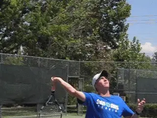
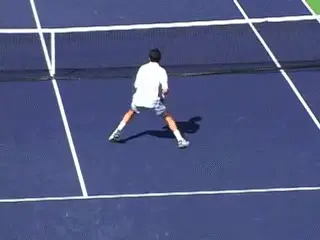
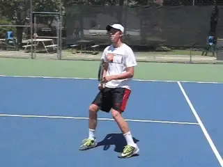
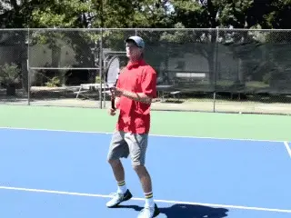
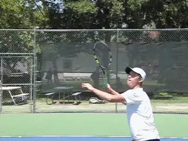
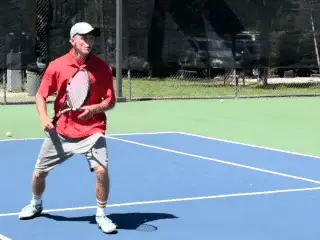

← Bài trước: Invisible Greatness | 🏠 Classic Lessons Trang chủ | Bài tiếp: → Is the Underhand Serve Underhanded
Cú đập bóng (smash/overhead) – Hay là Cú đập trước mặt?
Thư viện kiến thức quần vợt thống nhất — Cơ bản, Phân tích kỹ thuật, Thư viện tham khảo và nhiều hơn nữa
Cú đập bóng (smash/overhead) – Hay là Cú đập trước mặt?
Jeremiah Walsh

Cú đập bóng (smash/overhead) nên được gọi là "cú đập trước mặt".
Trong quan điểm của tôi, cú đập bóng (smash/overhead) thực sự không phải là "cú đập lên trên". Nó không nên được gọi như vậy. Từ ngữ này không mô tả yếu tố quan trọng nhất để đánh bóng tốt.
Cú đập bóng (smash/overhead) thực sự là "cú đập trước mặt". Mốc quan trọng là điểm tiếp xúc. Điểm tiếp xúc không phải ở trên đầu bạn. Nó cần phải ở trước mặt bạn.
Yếu tố quan trọng nhất để giữ điểm tiếp xúc trước mặt là bộ chân di chuyển. Nó là việc học cách di chuyển, cách ở lại phía sau bóng, và cách sử dụng chân và chân để phụ thuộc vào loại cú đập bóng (smash/overhead).
Nó là việc học phải làm gì khi bạn phải tiến về phía trước, khi bạn phải lùi lại, và cũng như, khi bạn phải di chuyển xung quanh bóng để đánh một cú đập bóng (smash/overhead) từ phía trái tay.
Cơ chế trên cú đập bóng (smash/overhead) quan trọng. Nhưng trong bài viết này, tôi tập trung vào bộ chân di chuyển. Đây là yếu tố quan trọng nhất trong việc tạo ra điểm tiếp xúc trước mặt.
Khi các huấn luyện viên làm việc với các đội bóng rổ, cố gắng phân tích kỹ thuật của một tay vợt có thể là một thảm họa. Trong dài hạn, tay vợt có thể muốn cải thiện kỹ thuật nhưng cố gắng thay đổi ở giữa mùa giải hiếm khi cải thiện kết quả trong các trận đấu thi đấu - thực tế là ngược lại.
Trải nghiệm tiêu cực này có thể thực sự khiến tay vợt chống lại việc cải thiện kỹ thuật trong dài hạn. Tôi cảm thấy rằng việc tái cấu trúc kỹ thuật cơ bản phải xảy ra bên ngoài chu kỳ thi đấu. (Để đọc một bài viết tuyệt vời về cơ chế của cú đập bóng (smash/overhead) bởi Kerry Mitchell, Nhấn vào đây.)

Di chuyển là chìa khóa để giữ bóng ở phía trước khi tiếp xúc.
Nhưng ngay cả khi bạn làm việc để cải thiện vị trí hạ vợt hoặc xoay cánh tay trên pha vung vợt tiến lên, nếu không có vị trí tốt và điểm tiếp xúc tốt, những thay đổi như vậy có thể vô nghĩa. Nếu bạn đang chơi quần vợt giải đấu thường xuyên, di chuyển và điểm tiếp xúc là những vấn đề bạn có thể luyện tập và cải thiện ngay bây giờ, điều này có thể mang lại lợi ích ngay lập tức.
Bóng đang đi đâu?
Khi hầu hết mọi người tưởng tượng về cú đập bóng (smash/overhead), họ tưởng tượng một quả bóng rơi thẳng xuống trước mặt họ. Nhưng các tay vợt chuyên nghiệp không leo lên một cái thang và để bóng rơi thẳng xuống cho bạn đánh trong các trận đấu thi đấu.
Khi đối thủ đánh một cú đập bóng (smash/overhead) tốt, quả bóng đang hướng đến hàng rào phía sau. Đối thủ đang cố gắng đưa bóng vượt qua bạn. Ít nhất là anh ta đang cố gắng đưa bóng phía sau điểm tiếp xúc của bạn.
Di chuyển là chìa khóa để ngăn chặn điều này và thiết lập điểm tiếp xúc "trước mặt". Nhưng hầu hết các tay vợt không được dạy cách di chuyển để đánh cú đập bóng (smash/overhead) một cách hiệu quả nhất.
Bước chéo
Thông thường, khi các tay vợt được dạy cách đánh cú đập bóng (smash/overhead), họ được dạy cách bước bên. Quay, bước bên lại, bước vào, đánh.

Tất cả các tay vợt nên học cách bước chéo lại với bước đầu tiên và xoay thân.
Nhưng các tay vợt giỏi hiếm khi bước một bước bên lại ban đầu. Họ bước một bước chéo.
Di chuyển nên giống như một người ném bóng. Sau khi ném bóng, điều đầu tiên người ném bóng làm là bước chéo lại.
Tại sao? Bởi vì nó nhanh hơn. Điều này rất quan trọng để có thể vào vị trí để đánh bóng trước mặt bạn.
Yếu tố quan trọng khác là có thể đánh từ cả hai chân - và học khi nào đánh từ mỗi chân. Phụ thuộc vào quả bóng, đôi khi bạn bước vào và đôi khi bạn nhảy.
Trong quần vợt, điều này có nghĩa là tay vợt nên xoay hông và vai cho đến khi họ song song với đường biên sân như khi bước chéo. Họ giữ nguyên vị trí đó cho đến khi đến lúc đánh.
Điều này là vì cơ bản có hai loại cú đập bóng (smash/overhead). Cú đập bóng (smash/overhead) tấn công và phòng thủ. Cú đập bóng (smash/overhead) tấn công là những cú đập bóng (smash/overhead) mà bạn thực sự có thể bước vào. Bạn bước về phía trước. Bạn đánh từ chân trước.
Cú đập bóng (smash/overhead) phòng thủ bạn không thể bước vào. Bạn phải học cách đánh trong không khí bằng cách nhảy từ chân sau.
Để có một cú đập bóng (smash/overhead) tuyệt vời, bạn phải nhận ra rằng cú đập bóng (smash/overhead) là tấn công hay phòng thủ và bạn cần phải có thể tạo ra điểm tiếp xúc trước mặt trên cả hai.
Cú đập bóng (smash/overhead) tấn công
Khi bạn có thể bước vào từ chân trước để đánh một cú đập bóng (smash/overhead) tấn công, chìa khóa là tìm góc xuống đúng. Lỗi phổ biến nhất là đánh quá mạnh.

Bước vào một cú đập bóng (smash/overhead) tấn công và tìm góc xuống.
Các tay vợt cố gắng quá nhiều sức mạnh và đánh dài. Hoặc họ cố gắng làm cho bóng nảy cao và kết thúc bằng cách đánh vào lưới.
Khu vực mục tiêu của bạn nên ở đâu đó xung quanh khu vực không ai có thể đến được của đối thủ. Tôi gọi đây là khu vực cú đập bóng (smash/overhead).
Đó cho bạn 6 hoặc 8 feet để đánh hỏng ở bất kỳ hướng nào. Đừng cố gắng đánh vào chân đối thủ của bạn. Chiều cao mục tiêu nên ở đâu đó giữa đầu gối và eo.
Trên các cú đập bóng (smash/overhead) tấn công, tôi thường khuyên các tay vợt của mình đánh nó khoảng 70% sức mạnh tối đa vì 70% dường như là nơi mọi người thư giãn và có được quỹ đạo đúng. Nó nên cảm thấy mượt mà.
Khi các tay vợt cố gắng đánh một chút mạnh hơn và đi đến 80, 90 hoặc 100% sức mạnh của họ, đó là lúc họ thường co lại. Họ bắt đầu đánh hỏng cú đập bóng (smash/overhead) của mình vì họ đang cố gắng quá nhiều. Vì vậy, hãy chú ý đến tỷ lệ sức mạnh của bạn, ngay cả trên các cú đập bóng (smash/overhead) tấn công.
Cú đập bóng (smash/overhead) phòng thủ
Nó tuyệt vời khi đánh càng nhiều cú đập bóng (smash/overhead) tấn công càng tốt, nhưng thực tế là chúng thường là một phần nhỏ của các cú đập bóng (smash/overhead) đánh trong các trận đấu. Hầu hết 90% các cú đập bóng (smash/overhead) là phòng thủ.

Cú đập bóng (smash/overhead) phòng thủ có nghĩa là nhảy lên không trung từ chân sau.
Đây là một vấn đề khác trong các bài học. Các tay vợt đứng trên lưới và luyện tập hầu hết các cú đập bóng (smash/overhead) tấn công. Họ không biết cách nào để giữ điểm tiếp xúc trước mặt khi họ phải lùi lại và nhảy.
Để đánh một cú đập bóng (smash/overhead) phòng thủ hiệu quả, bạn phải học cách đánh mà không bước vào với chân trước. Bạn phải học cách đánh trong không khí bằng cách nhảy từ chân sau.
Hãy nhớ, bóng đang cố gắng đi phía sau bạn. Nếu điều đó xảy ra, bạn không thể tạo ra sức mạnh. Vì vậy, bạn không thể để điều đó xảy ra. Công việc của bạn là cắt bóng trước khi nó xảy ra.
Chìa khóa không phải là đánh nhanh, mà là tạo ra điểm tiếp xúc. Thực tế, khi bạn đánh các cú đập bóng (smash/overhead) phòng thủ, tôi khuyên bạn nên sử dụng khoảng 50% sức mạnh của mình.
Bạn không thể đập hầu hết các cú đập bóng (smash/overhead) phòng thủ. Mục tiêu là đánh một cú đánh mượt mà. Chìa khóa là nhận ra ngay từ đầu rằng bạn đang phòng thủ. Đừng nhầm lẫn một cú đập bóng (smash/overhead) phòng thủ với cơ hội mà nó không phải là.
Thiết lập điểm tiếp xúc trước mặt - không phải trên đầu. Nếu bạn làm được điều này, bạn có thể đánh các cú đập bóng (smash/overhead) hiệu quả từ khu vực không ai có thể đến được.
Trong bóng chày, điều đầu tiên các tay bắt ngoài sân làm là lùi lại, đánh giá mọi thứ, và sau đó đi về phía trước nếu cần thiết.

Luyện tập di chuyển xung quanh bóng và đánh cú đập bóng (smash/overhead) bên trong ra ngoài.
Chiến lược này cũng có thể hoạt động trên cú đập bóng (smash/overhead). Nếu bạn không chắc chắn về độ tốt của cú đập bóng (smash/overhead), ngay khi bóng đi lên, bước đầu tiên của bạn nên là lùi lại và đảm bảo bạn có thể ở phía sau bóng.
Cú đập bóng (smash/overhead) bên trong ra ngoài
Có một mẫu di chuyển cú đập bóng (smash/overhead) thứ ba hiếm khi được luyện tập nhưng cũng rất quan trọng để có một cú đập bóng (smash/overhead) hoàn chỉnh. Cú đập bóng (smash/overhead) bên trong ra ngoài. Nó giống như cú thuận tay bên trong.
Bạn thực sự muốn phải đánh một cú trái tay đập bóng (smash/overhead), cú khó nhất trong quần vợt? Hay tệ hơn là để bóng thực sự đi phía sau bạn hoặc ngay cả hoàn toàn vượt qua bạn trên phía trái tay?
Tại sao không đánh một cú đập bóng (smash/overhead) và vẫn ở phía trước trong điểm hoặc kết thúc điểm ngay lập tức? Các tay vợt giỏi di chuyển xung quanh bóng để đánh cú thuận tay bên trong bất cứ khi nào có thể.
Điều này cũng nên đúng ở lưới. Di chuyển xung quanh bóng và đánh cú đập bóng (smash/overhead) bên trong ra ngoài. Sử dụng cú đập bóng (smash/overhead) của bạn và tận dụng cơ hội để ở phía trước hoặc kết thúc điểm.
Đối với cú đập bóng (smash/overhead) bên trong ra ngoài, bạn di chuyển lùi theo đường chéo để vào vị trí. Nhưng điều quan trọng là bạn cũng phải xoay và căn chỉnh vai. Cơ bản, bạn muốn tưởng tượng vai của mình được căn chỉnh với góc đối diện của sân.
Với cú đập bóng (smash/overhead) bên trong ra ngoài, cùng những quy tắc áp dụng về chân nào để đánh. Bước vào trên các cú đập bóng (smash/overhead) tấn công với chân trước. Nhảy lên và đánh từ chân sau khi nó là phòng thủ.
Quả bóng nảy

Khi cú đập bóng (smash/overhead) nảy, hạ thân để giữ điểm tiếp xúc.
Tình huống cuối cùng. Và nếu quả bóng nảy? Điều này có thể xảy ra khi quả bóng ngắn, hoặc bạn không có thời gian để di chuyển xung quanh nó và đánh nó trong không khí. Có thể tốt hơn để để nó nảy trong những trường hợp này.
Chìa khóa ở đây là đầu gối. Cảm giác là bạn đang hạ thấp chính mình. Điều này cho phép bạn giữ cùng điểm tiếp xúc với cánh tay đánh được kéo dài nhưng vẫn ở trước mặt. Hạ thấp chính mình và đánh từ chân trước!
Những điểm chung trong tất cả các biến thể này là cùng một mẫu di chuyển, ở lại phía sau bóng, biết khi nào đánh từ mỗi chân, và quan trọng nhất, điểm tiếp xúc trước mặt của bạn. Hãy nhớ, đó là "trước mặt"!
Jeremiah Walsh đã là giám đốc quần vợt tại Sun Oaks Tennis and Fitness Club ở Redding, California kể từ năm 2009, câu lạc bộ mà anh ấy lớn lên chơi. Anh cũng là giám đốc của The Ascension Project, một chương trình phát triển trẻ độc đáo, phi lợi nhuận dựa tại Sun Oaks, tập trung vào giải đấu quần vợt trẻ như một môn thể thao đội. Trước khi trở lại Sun Oaks, Jeremiah đã có sự nghiệp huấn luyện viên đại học nổi bật với tư cách là huấn luyện viên trưởng tại Virginia Military Institute, Đại học Northern Colorado, và Đại học Southern Oregon nơi đội nữ của anh ấy thiết lập kỷ lục mới về tỷ lệ thắng trong mùa giải. Anh ấy là một người đam mê leo núi, thể thao và săn bắn, người làm xúc xích nai và xúc xích gấu ngon, như được chứng thực bởi ban biên tập Tennisplayer.
Nguồn: tennisplayer.net lưu trữ — Cú đập bóng (smash/overhead) – Hay là Cú đập trước mặt.docx (Thư viện giảng dạy của John Yandell, 2002-2022). Được trích xuất và hiển thị dưới dạng HTML cho Tennis Future Lab.